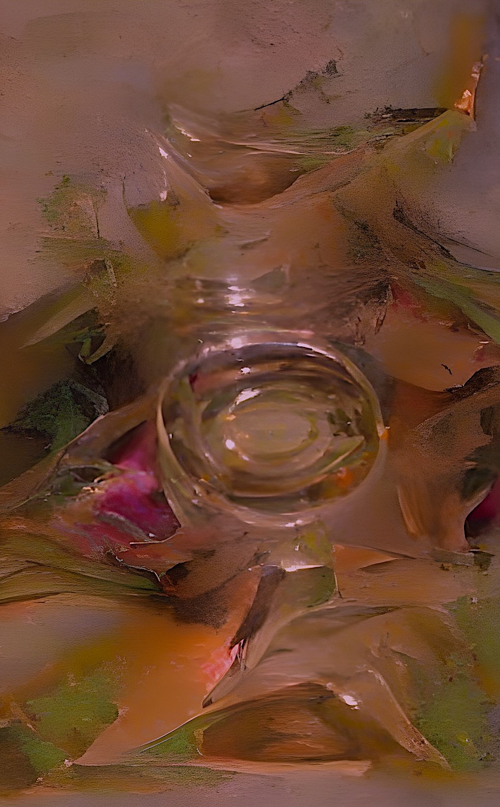

AI Fractal Art
AI Fractal 13 
Artificial Intelligence (AI)


This is the last of 13 images in this gallery.
Clicking the next button on left will return viewer to the first image.
AI Fractal 13 
Artificial Intelligence (AI)
This is the last of 13 images in this gallery.
Clicking the next button on left will return viewer to the first image.